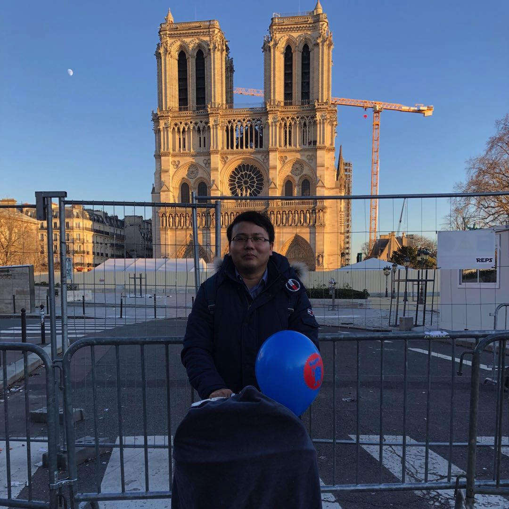

Biography
I am a postdoctoral researcher under the supervision of Prof.
Luc Van Gool at
Computer Vision Lab, ETH Zurich. My research interest lies in Computer Vision and Machine Learning for
Automated Video Artificial Intelligence, capable of autmatically learning to understand the world through videos. I currently working on human-focussed video clustering, classification, prediction as well as video generation, enhancement and manipulation with deep manifold learning, generative distribution learning, and neural architecture learning.
[Contact details] [Google Scholar]

Before coming to Zurich, I obtained my PhD degree from Visual Information Processing and Learning (VIPL) group in Institute of Computing Technology (ICT), Chinese Academy of Sciences (CAS), in 2015. Prof.
Shiguang Shan is my PhD supervisor. During my PhD study, Prof.
Ruiping Wang worked as my mentor, and I also worked closely with Prof.
Xilin Chen.
Selected Conference Papers

In this work we tackle the key causes behind the problems of computational complexity
and over-fitting in advanced DCF trackers. We revisit the core DCF formulation and introduce: (i) a factorized convolution operator, which drastically reduces the number of parameters in the model; (ii) a compact generative model of the training sample distribution, that significantly reduces memory and time complexity, while providing better diversity of samples; (iii) a conservative model update strategy with improved robustness and reduced complexity.
[Project] [Paper] [Code]